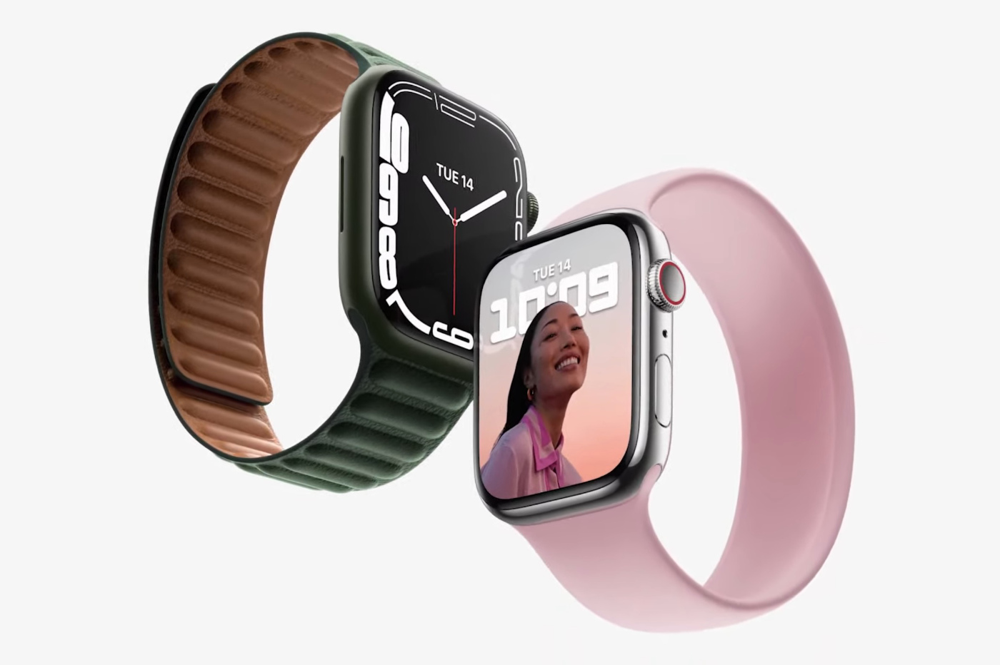

Watch serie 7
Apple Watch Series 7 : les caractéristiques
Versions 41 et 45 mm
Écran environ 20% plus grand que celui de la Series 6
Clavier complet
IP6X et étanche jusqu'à 50 mètres
watchOS 8
Détecteur de chute à vélo, compatible vélo électrique
Charge plus rapide de 33% (0 à 80% en 45 minutes)
Watch serie SE

À l'instar de l'iPhone SE, cette Watch SE est une sorte de compromis entre passé et modernité. Sauf que là où le smartphone propose un châssis vieux de quelques années pour des performances à jour, ce modèle de montre offre un châssis à jour, celui de la Series 6, avec des performances moindres. L'Always-on et l'électrocardiogramme (ECG) s'absentent donc pour permettre à Apple de proposer une montre à 299 €